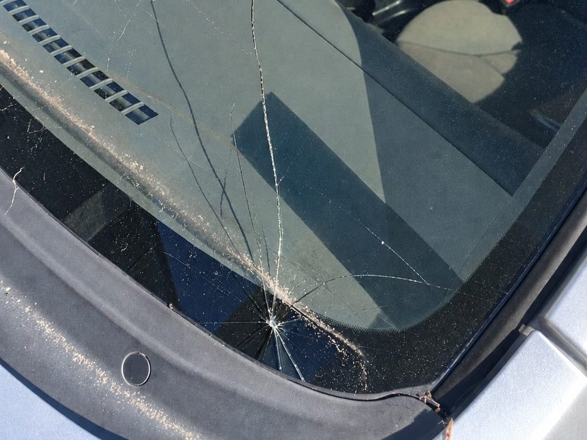
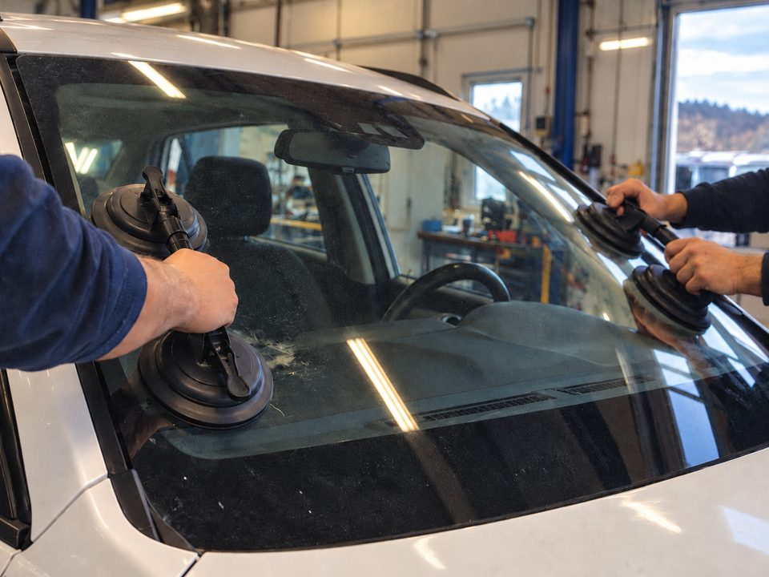
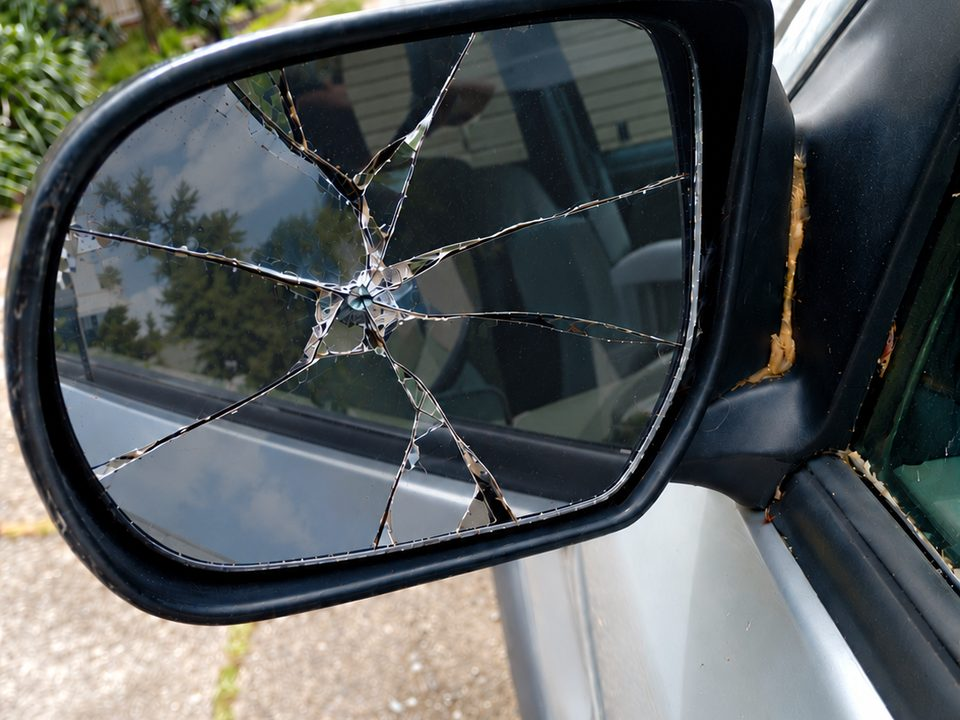
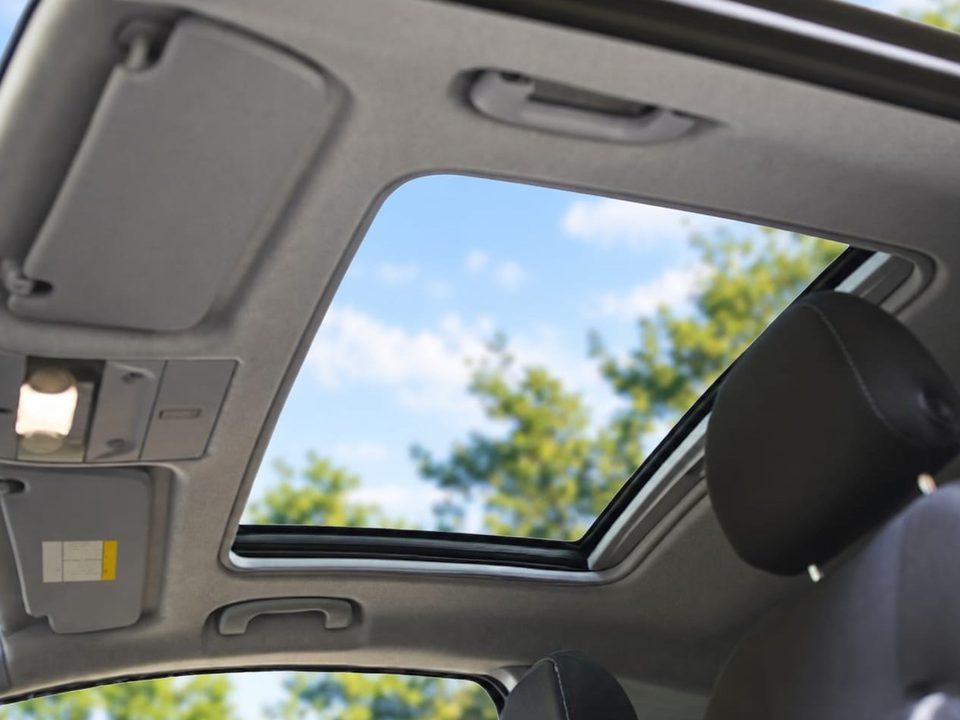
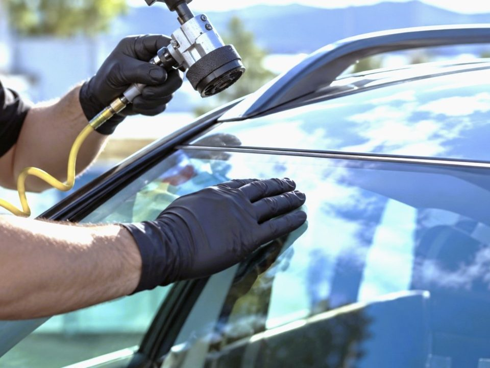

We specialise in auto glass repair and auto glass windscreen replacement across the Greater Wellington region, including Lower Hutt, Porirua, Kāpiti Coast and Upper Hutt. Whether it's a chipped or cracked windscreen, side mirror or sunroof damage, our team is well equipped to get it sorted and have you back on the road in a timely manner.
Glass damage is an inconvenience, but sorting out the glass on your vehicle shouldn't be hard, or leave you unsure what to do or where to go. We are the professionals people in the community come to, for quality auto glass services for years. Your windscreen forms part of your vehicle's structure. A weak point leaves the glass open to more damage from the elements, and heat, cold and moisture can cause a chip to spread. Our team will work through the solution that is most convenient for you at affordable prices.
Our team is focused on developing practices that enhance the auto glass services you receive, whether you need an auto glass repair or a replacement. We have always been committed to high-quality outcomes for our customers, and we will ensure that you get a reliable service for your auto glass solution experience.
The services we offer to customers are reliable and effective. We strive towards high-quality outcomes because we know that it is going to make your experience more pleasurable and more reliable. Also, having a safely constructed vehicle to get around in is important.

A windscreen chip can happen unexpectedly sometimes without you noticing straight away. The longer it’s left, it can grow and turn into something much bigger. When it’s seen to early, a repair can often still be possible, and we’d always prefer to repair the windscreen before replacing it.
Learn more
A new windscreen restores the strength and brings back a clear view of the road your car was built with, even when the damage is too extensive to repair. We know it’s an inconvenience, so our team works efficiently to fit the job around you, making it one less thing to worry over.
Learn more
A cracked or loose side mirror is hard to ignore, especially in traffic or when manoeuvring into a tricky park. Often getting the glass replaced is quicker and simpler than a whole new mirror. We can quickly tell what’s needed for your damaged side mirror even from a description of the damage and the make of your car. Having a clear view beside and from behind makes a bigger difference than people expect.
Learn more
A damaged sunroof and small leaks can lead to damp seats and that musty smell over time. It won’t always show up as a chip or crack and the sunroof seal is what needs attention instead. Our team checks which it is so you’re not left wondering what is actually needed. Getting that answer early saves guessing and keeps the inside of your car dry.
Learn more
Plenty of glass repairs can be done right where you are, at home or at work. It means fitting around your day, with no added trip to a workshop and no time spent waiting. For a lot of people, that convenience is what turns “I’ll get to it eventually” into getting it sorted this week.
Learn more